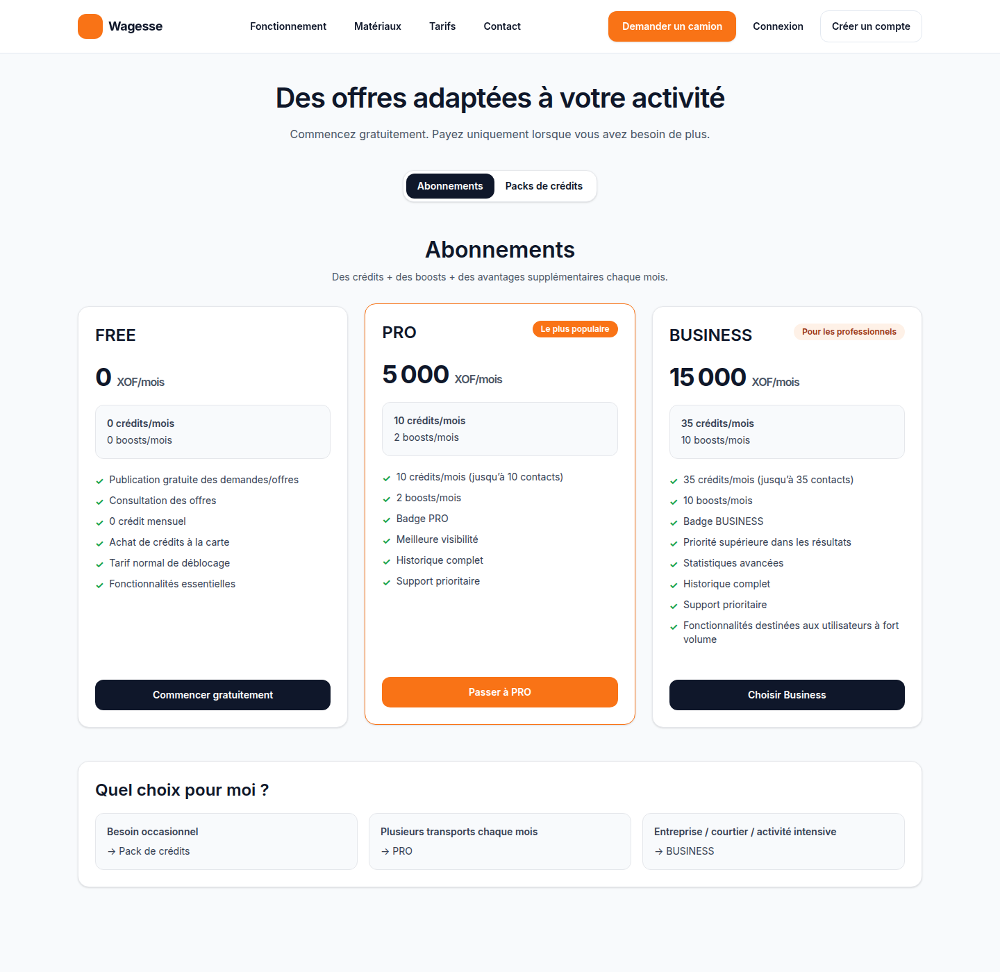
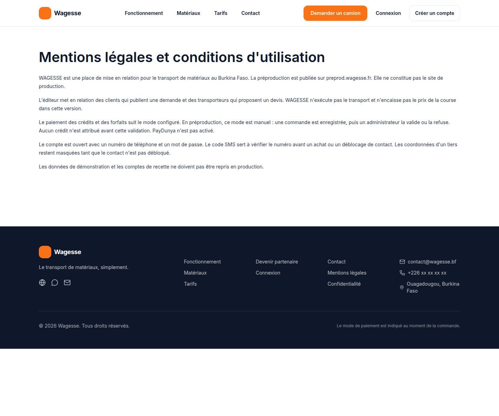
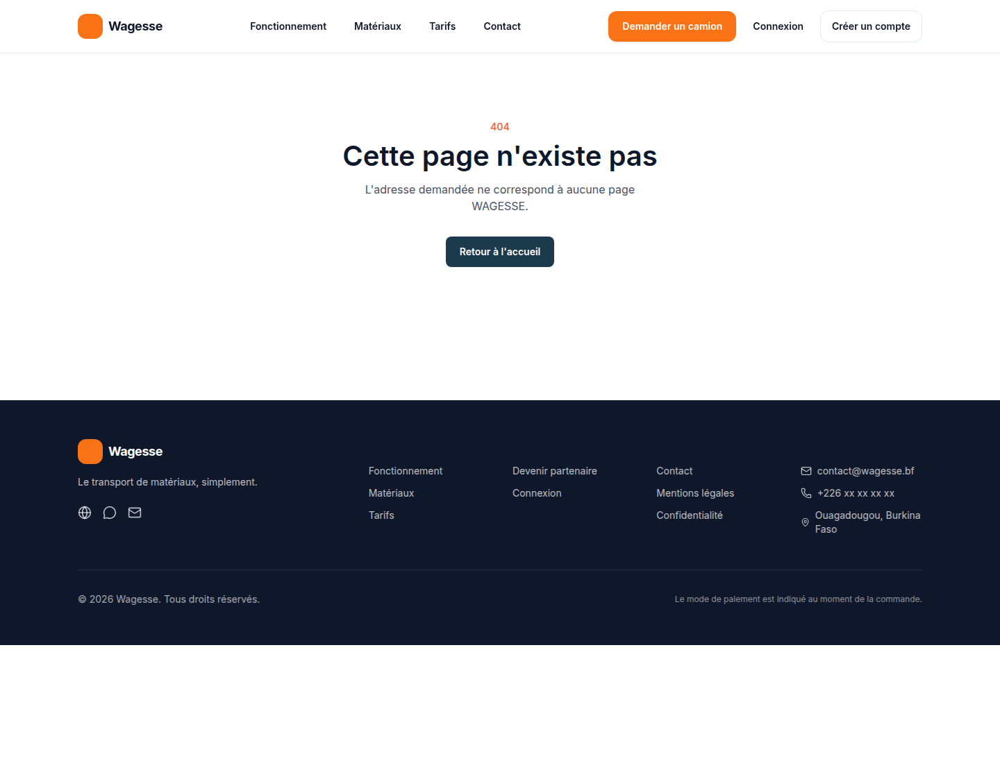

WAGESSE
Manuel client
Préproduction https://preprod.wagesse.fr, 7 novembre 2026. Les captures viennent du serveur déployé. Aucun mot de passe n'est montré.
1. Créer un compte
- Ouvrir Créer un compte.
- Choisir Client. Le rôle administrateur n'est pas proposé.
- Renseigner un numéro d'au moins huit chiffres, le nom et un mot de passe d'au moins huit caractères.

Le compte s'ouvre sur l'espace client. Un bandeau rappelle que le numéro n'est pas vérifié. La publication d'une demande et la lecture des devis restent possibles. L'achat, le forfait et le déblocage des contacts attendent le code SMS.
Erreur fréquente. Moins de huit chiffres, ou un numéro déjà inscrit.
2. Se connecter

Une connexion réussie ouvre /dashboard/client. Elle n'ouvre plus l'écran de saisie du code.
3. Acheter des crédits

- Choisir un pack. Le règlement se fait hors de la plateforme, avec la référence de la commande.
- Avant la validation d'un administrateur, le solde ne change pas.
- Après une validation, les crédits du pack sont ajoutés une seule fois.
- Sans numéro vérifié, l'achat est refusé et aucun crédit n'est créé.
Le cycle de préproduction a vérifié ces quatre points, puis le refus d'une seconde commande.
4. Publier, débloquer, accepter
- Créer une demande : matériau, quantité, ville de départ, ville d'arrivée, date.
- La publier. Un autre client ne peut pas la lire.
- Lire les devis. Les numéros des transporteurs restent masqués.
- Accepter sans déblocage est refusé.
- Débloquer les contacts. Un crédit est consommé. Un second déblocage de la même demande n'en consomme pas un autre.
- Accepter le devis. Une mission est créée.
- Suivre les étapes du transporteur, puis confirmer la fin. Seul le client peut passer la mission à terminée.
La demande « Sable de recette finale » a produit la mission cmw6ykr8q001plbcf2wt7gjic, terminée en base.
5. Pages légales

Les conditions et la confidentialité sont liées depuis l'inscription et le pied de page. Une adresse inconnue affiche une page française.
